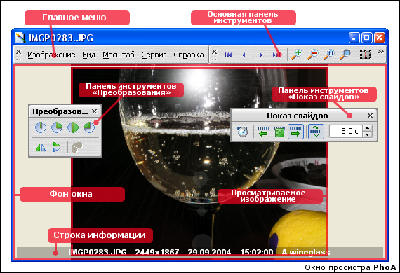

Этот режим позволяет просматривать отдельные изображения — в отдельном окне или на полном экране. Это, собственно, и является целью того, ради чего стоит составлять фотоальбом.
В режиме просмотра доступны следующие функции:
Эти функции доступны через главное меню, кнопки панели
инструментов, через контекстное меню, вызываемое нажатием правой кнопки мыши, а также используя команды
клавиатуры и мыши.
{[%hh_seealso_ru]}
Работа в режиме просмотра
Настройки программы :: Режим просмотра
Режим обзора
{[%hh_ftr_ru]}